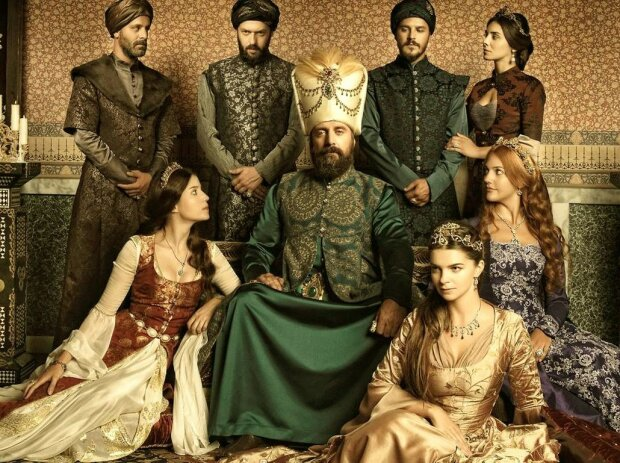
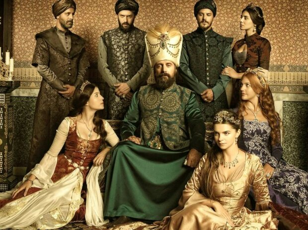

Сериал "Великолепный век"
Турецкий остросюжетный телесериал в жанре исторической драмы по сценарию Мерал Окай, основанный на реальных событиях и рассказывающий о периоде властвования Сулеймана Великолепного.
Турецкий остросюжетный телесериал в жанре исторической драмы по сценарию Мерал Окай, основанный на реальных событиях и рассказывающий о периоде властвования Сулеймана Великолепного.